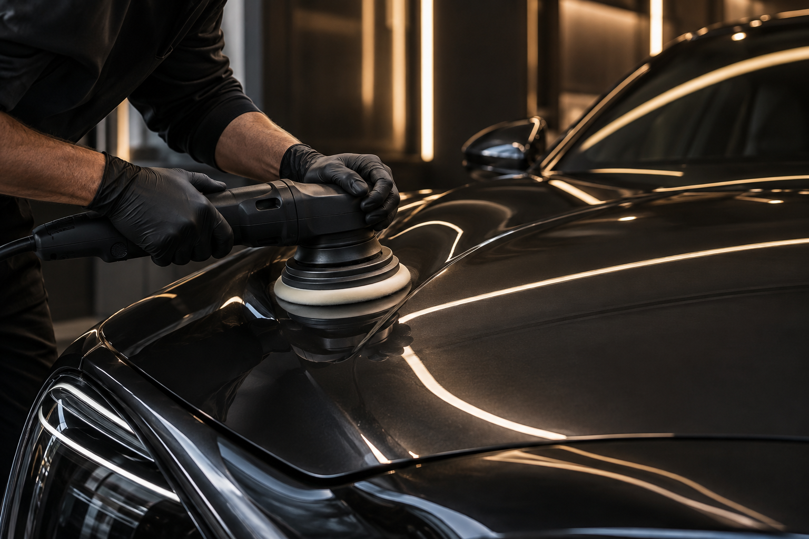

Külső mosás
Alapos, kíméletes tisztítás, amely visszaadja a karosszéria tiszta megjelenését.
AUTÓÁPOLÁS, MÁS SZINTEN
Gondos autóápolás kívül-belül. Precíz munka, kifinomult megjelenés és az érzés, amikor újra öröm ránézni az autódra.
AMIBEN SEGÍTÜNK
A mindennapi felfrissítéstől a fényezés gondos ápolásáig minden szolgáltatásunk a részletekre épül.
Alapos, kíméletes tisztítás, amely visszaadja a karosszéria tiszta megjelenését.
Az utastér átfogó tisztítása és ápolása, hogy az autó belül is újra jó érzés legyen.
A kisebb felületi hibák finomítása és a fényezés mély fényének kiemelése.
Tartós felületvédelem és elegáns fény a mindennapi igénybevétel mellett is.

A GLOSSWERK SZEMLÉLETE
Számunkra az autóápolás nem gyors rutin. Minden felület, anyag és részlet más figyelmet kér. Ezért a munkát az autó állapotához és a kívánt eredményhez igazítjuk.
Beszéljük át az autódatEGYSZERŰ FOLYAMAT
Mondd el, mire van szükséged, mi pedig segítünk megtalálni az autódhoz illő megoldást.
Nézd át a lehetőségeket, és jelöld meg, miben segíthetünk.
Írd le az autó típusát és az általad kért időpontot.
Az űrlap végén áttekintheted a megadott adatokat.
ÜGYFELEINK MONDTÁK
★★★★★„Az autó teljesen újszerű lett. A fényezés sokkal szebb, mint előtte.”
★★★★★„Precíz munka, a belső tér nagyon szép és tiszta lett.”
★★★★★„A polírozás után eltűntek a kisebb karcok, nagyon látványos lett az eredmény.”
INDULHATUNK?
Írd meg, milyen szolgáltatás érdekel, és küldd el az időpontigényed online.